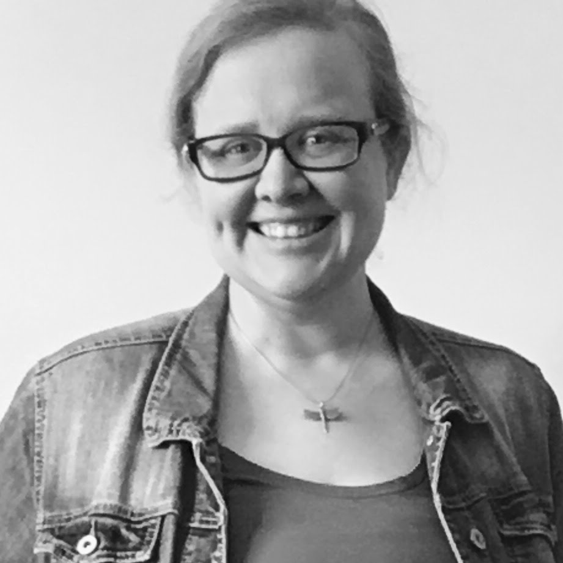

Katheryn Wright
I make things. I work with students to make things. I love designing infrastructure, from a mobile kitchen cart to theoretical frameworks that support making knowledge. The thread running through it is the place where theory becomes something you can hold, walk through, play with, or render.
I am drawn to big, complex projects but also to small and intimate stories that offer meaning in the middle of uncertainty. My research sits at the intersection of digital humanities, AI ethics, place-based pedagogy, and critical posthumanism.
My book-in-progress, Speculative Education: Making Knowledge from the Ruins, asks what it looks like to make knowledge from what remains when the structures we counted on no longer hold. It is inspired by my mother, a teacher. It is about grief as much as it is about teaching.
I am a Full Professor of Digital Humanities and Roger H. Perry Endowed Chair for Innovation at Champlain College. I live in Colchester, Vermont with my husband and son.